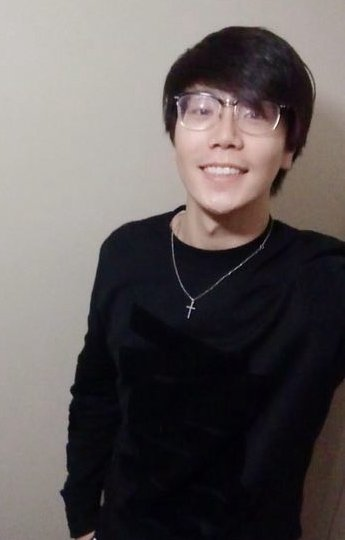

About Myself
Hi, I am Enhao(Lionel) Wu from Shanghai, China. A third year Computer Science student study at University of Toronto with concrete skills on C, C++, Java and Python. Also, learn a little on shell, MySQL, HTML, JavaScript and CSS programming. Currently, looking for an summer internship to see how those ideas in theory working in our real life and sharpening my programming skills.
Current Coursework
- Software Design
- Software Tools and Systems Programming
- Introduction to the Theory of Computation
- Computer Organization
- Data Structures and Analysis
- Probability with Computer Applications
- Linear Algebra I
- Linear Algebra II
Education(2011-current)
- From 2011-2014.6 :High school Dipioma (GCE A-level) at Shanghai GuangHua College Fudan Campus
- From 2014.09-2016.09 :Bachelor of Sciencemajor in Computer Science at University of Saskatchewan
- From 2016.09-current :Bachelor of Science major in Computer Science specialist at University of Toronto
badminton, pool, pingpong, coding